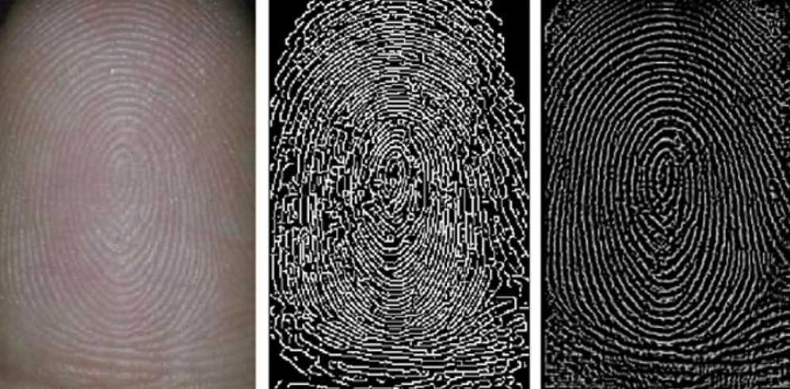
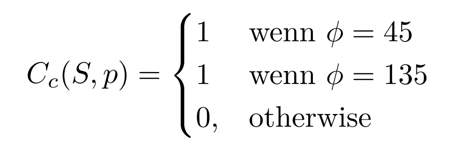
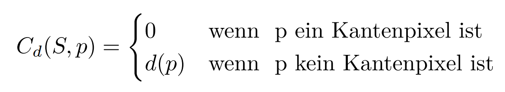
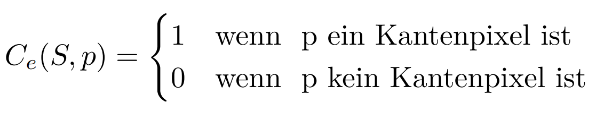
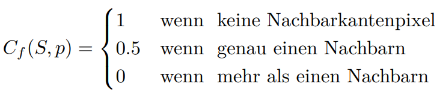
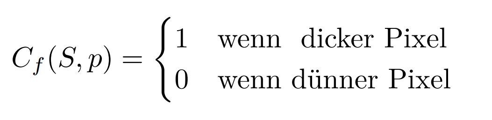
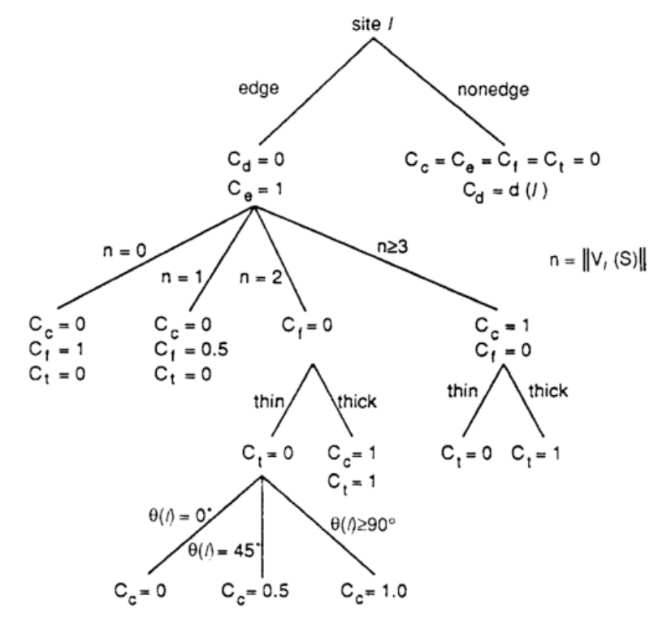
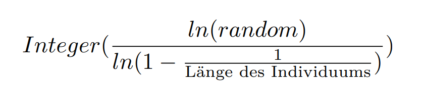
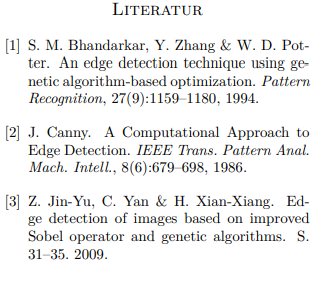
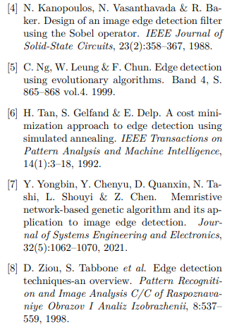

Edge detection as optimization problem solved using Evolutionary Algorithms
Abstract
The edge detection problem in this work is to choose an edge configuration with minimum cost. The four evolutionary algorithms used are Simulated Annealing, Hillclimbing, Steady-State and the canonical Genetic Algorithm. Algorithm. The transformation of the edge detection into a minimization problem is achieved by formulating a cost function that evaluates the quality of the edge configurations. The function is a linear sum of weighted cost factors. The cost factors capture desirable properties of edges such as accuracy in localization, sparseness, and continuity. It turns out that none of the algorithms provide perfect results but promising approximations. The implementation is very computationally expensive, but it offers a great potential for parallelization
Introduction
Edge detection is an important step in image processing systems and recognition. Existing edge detection operators like the Sobel gradient operator and the Laplacian operator are based on the assumption that assumption that edges in an image are step-shaped intensity edges, Therefore. the resulting edges are usually thick and fragmented. Finding true edges in an image is still a difficult task. Another problem of existing operators is the huge search search space. If we consider an image with 1024 by 1024 pixels, the solution space is $$2^{1024} \cdot 2^{1024} $$ . Therefore, without optimization, the the task of edge detection is time consuming and memory intensive. The minimization problem was first posed by [6]. In [1] it was again taken up in detail, explained and investigated. In the last years there was again an increased interest in this approach. It was in [5] the Tabu search and a promising result was was delivered. Other approaches that have been proposed as alternatives to the classical Canny edge detector [2] or the Sobel operator used here [4] are neural networks as in [7]. In [3], the optimal threshold after the Sobel filter is found using genentic algorithms is found. An overview is given in the paper [8] . With the help of sparse and accurate edges can be used in medical features from X-ray fingerprints can be can be extracted.
Description of the Chromosome
The chromosome is represented by a bit matrix
of NxN (size of the image). Thus, it describes the final edge image
The initial chromosome used in TabuSearch, or the initial chromosome population in Genetic Algorithm and Local Search Algorithm are randomly generated from the edge-enhanced image. Edge-enhanced here means an image generated from the input image. For this
two ways were used. One is the
Region-Dissimilarity image from [6] or on the other hand as in [1] using the Sobel-operator generated image. The chromosome values are either 0 or l, where 0 represents a non-edge pixel and 1 represents an edge pixel. In
this experiment, the chromosome value of a pixel [x,y] is generated using the following formula.
generated[5]:
$$Chromosome[x,y]=R1 * Integer(Sobel[x,y]+R2)$$
$$\text{where }$$
$$\text{R1 is a random Integer either 0 or 1}$$
$$\text{R2 is a random float between 0.99}$$
Thus, from the edge-enhanced
image, first approximations are estimated randomly.
These are then optimized in the next step by the
optimized by the evolutionary algorithm.
Sobel operator:
The Sobel operator is a simple edge detection edge detection filter, which is often used in image image processing and is used there as an and is used there as an algorithm with the help of convolution. It calculates the first derivative of the pixel brightness values, while at the same time smoothing orthogonal to the direction of is performed.Region-Dissimilarity:
the fundamental property of an edge is that it separates regions that are not similar. The enhanced image is a collection of pixels in which each pixel value is proportional to the degree of regional dissimilarity. dissimilarity enhancement, we assign a floating point value to those points in an image that possess this fundamental property 0 ≤ d ≤ 1. For this approximation. two things are required. A good localization of regions of interest and a specification of what an edge should look like. This specification is hardcoded as one of twelve edge structures. The regions are thus searched in a 3x3 environment. Since one defines edge structures at such a low level, it is not impossible that more specialized edge structures are excluded for larger images. For each edge structure, we define a pair of regions on either side of the edge. sides of the edge. These regions, which for each edge structure we will denote R1 and R2 will be the regions of interest to which a dissimilarity measurement is applied. These regions are one side or the other around the circled edge pixel, which represents the edge by crosses. Depending on the application and the measure of dissimilarity, larger (or smaller) regions for regions could be defined for Rl and R2. This measure could be a simple difference of the gray level mean values in Rl and R2, or could be a more complicated measure based on statistical or structural properties of the Gray levels. The procedure from [6] is now described:- At the beginning all pixels are set equal to zero.
- At each pixel the steps a) and b)
- Each of the twelve edge structures of the basis set is transferred to the location by centering it on the pixel. The corresponding paired regions Rl and R2 are determined for each structure, and the value of the simple difference of the gray value averages in Rl and R2 is calculated. The structure that gives the gives the maximum value is called the best fitting edge structure.
- Now, a nonmaximal suppression is performed by shifting the position of the best matched
edge in a direction determined by the edge structure. For vertical, horizontal and diagonal edges the
shifting is done by shifting the
position by one pixel in each of the
direction perpendicular to the edge. For all other edge structures
by shifting the position of the edge
by one pixel in each of the four directions: up, down, left and right.
up, down, left and right. For
each shifted edge we determine
the new regions [or R1 and
R2 and calculate the corresponding value. One of the two following
cases results:
- no larger value results from Moving the best matched edge structure, then increasing the value of the dissimilarity measure by one third of the dissimilarity measure.
- If there is a larger value exists, nothing changes.
- At the end, the value is normalized to a scale from 0 to 1.
Setting up the Optimization problem
The function assigns a cost function for each feature adds a cost function so that the configuration with the lowest cost is the best.In practice, there is often a tradeoff between the various desirable properties of an edge. For example, if each edge in an image is required to be must be long and continuous, this can lead to poor localization and the appearance of false boundaries. Therefore it is appropriate to assign a measure of importance to each desirable edge property. This is achieved here by a linear combination of weighted cost factors, where each cost factor maps a desirable property of edges. The cost factors are curvature Cc, the region difference Cd, number of edges Ce, fragmentation Cf, and thickness Ct. First, we the general form of the cost function is described and then the individual cost factors. Thus, the following function results. S corresponds here to the gray value image, which is calculated after after the application of the Sobel operator. The function iterates over each relevant pixel, which is interesting for the pixel site p, which was changed during the mutation. $$F(S)=\sum_i w_i C_i (S,p)$$ The individual weights w depend on the respective image. For example, for a 32x32 image with a circle the standard weights from the paper [6] work. The choice of weights is discussed and proven in detail there. For this case the following are chosen: $$w_d = 2.0, w_t = 4.76, w_e = 0.25, w_f = 2.0, w_e=1.0$$
Cost factors
Cost of curvature:
The cost of Curvature rank the non-endpoint edge pixel based on a local curvature measure. This cost tends tend to smooth or remove curved edges. remove. To define the curvature cost consider an edge pixel which is not an endpoint. Then the edge pixel is the connection point (or common point) of at least one pair of straight edge segments. The direction of each of these straight edge segments is uniquely specified by a a vector from location 1 to location 2 of any other pixel of the Location 2 of any other pixel of the segment. Let n be the maximum number of distinct pairs of straight edge segments, connected by this connection point are. If we now measure the larger of the two angle, which here is ϕ, the following results-  Thus, angles representing straight edges are preferred.Cost of dissimilarity of regions:
: This dissimilarity cost assigns costs to the non-edge pixels that are are proportional to the degree of dissimilarity. This cost factor leads to placing edge pixels at Points with high dissimilarity. The region dissimilarity point cost factor Cd is given by: Cost for the number of edges:
The cost for the number of edge points assigns a (unit) price to each edge pixel. to each edge pixel. This cost is intended to prevent that an excessive number of edge pixels are are detected. The cost factor for edge pixels Ce is given by Cost of fragmentation:
The costs for the fragmentation assign costs for the Endpoint edge pixels. These costs lead tend to (locally) join or remove fragmented edges. To connect or remove. If we consider an isolated endpoint as a path that connects two non-isolated endpoints. However, if these are the same, then this point is alone. Then it seems reasonable to consider the cost of an isolated endpoint is twice as high as that of a as that of a non-isolated endpoint. The fragmentation point cost factor Cf is given by Edge thickness cost :
The cost factor Ct gives a (unit) price for thick edge pixels. An edge pixel is thick if the maximum degree of adjacent edge pixels in a 5x5 window is 1 or less for all the pixels in that window except the centered ones. This implementation fails for "holes" and must be and must be improved.  The interaction between the various cost factors is very complex. Nevertheless, it is it is possible to derive some interesting relationships between the different cost factors. These derivations can be represented with the help of a decision tree to save computing time. Genetic algorithms
The chromosomes of the parent population are used for reproduction on the basis of the fitness value, i.e. the reciprocal of the cost, Therefore, the probability that each chromosome that each chromosome will be selected is inversely proportional to the cost
Recombination:
Der Twopoint-Crossover is performed because it is easy to implement and reasonable genetic material can be exchanged. Two sites are randomly selected along the X dimension and two sites along the Y dimension randomly selected for the crossover operation. The task of mutation is to introduce new genetic material into the current generation. The mutation is necessary because the population of chromosomes in the Genetic Algorithm over the course of several generations through effective mate selection and crossover to some degree of crossbreeding reaches a certain degree of convergence, there is a risk that the solution will not converge any more.Mutation:
There are two different strategies for mutation. One is the efficient binary mutation, where the idea is that you can the distance to a next mutation i.e. a bitflip is calculated by  The Other strategy randomly selects a certain number of edge pixels and replaces the 3x3 neighborhood from that edge pixel with a randomly selected valid edge structure. The strategy with valid edge structures seems to be faster in the local search. to arrive at an optimum, no great difference was found in the genetic algorithms.Selection:
Selection determines which individuals are used for recombination and which are selected for the next generation. Since local search algorithms like simulated annealing work very well in this problem, a high selection pressure is expected. high selection pressure is expected. However, to make this tournament selection is chosen to make this adaptable. In tournament selection, a certain number of randomly selected a certain number of "opponents" of the of the population are randomly selected and let compete against each other. The winner is the one These winners are then returned when the number of required individuals is reached.Canonical Genetic Algorithm
With the canonical genetic algorithm it is tried to search parallel in the search space to prevent local optima. The idea is that more than one individual exists in a population. The population must be filtered. This is done with the operators recombination and selection as explained above. Then the parents are mutated and a new a new generation is created. This is then evaluated again and then everything starts until the Convergence of the evaluation of new
Steady-State
Steady-state here means that there are no generations in the classical sense. It is tried to get a stable population and to change it always from the best to change this and to integrate the children of the best. In each generation a few (good - with high fitness) chromosomes are selected to produce a new offspring. Then some (bad - with low with low fitness) chromosomes are removed and the new offspring is put in their place. The rest of the population survives until the next generation. This agorithm was chosen because the calculation takes very long and similar attempts were made at the local search. However, many principles of the evolutionary algorithms do not apply here. do not apply.
Local Search Algorithms
In the local search-based cost minimization approach to edge detection, the cost factors in the comparative cost function by computing a one decision tree. The local search is an iterative algorithm in which a cost function is used as a criterion to find the better of two edge configurations S and S1. different depending on the mutation A new edge configuration is generated from the current edge configuration by using one of the two described mutations. The new edge configuration replaces the current edge configuration if it proves to be better (i.e. (i.e., has a lower cost value). The algorithm is terminated when a simple simple termination criterion is met. The termination criterion could be, for example, as also implemented here implemented here on the number of better configurations according to K Itera-.tions. In the local search, the population consists of only one individual. This is evaluated, mutated, evaluated again and possibly exchanged. This kind of selection is in the extreme case: If it is better take it. This would be then the Hillclmbing algorithm
Simulated-Annealing
Simulated Annealing is the modeling of the physical cooling process. The probability that an ideal system is in the state x is proportional to $$e^{-\fraq{E(x)}{t}}$$ where E(x) is the energy level and T is the absolute temperature. In physics a fast cooling brings more irregular structures, which corresponds to local optima and a slower cooling brings more regular structures, which rather global optima leads. Thus, jumps from local optima are accepted even if they are somewhat worse. In principle: always accept improvements, deteriorations with decreasing probability. It was implemented by dividing the negative difference of the two individuals to be individuals to be compared by the temperature. the temperature starts with 100 and cools down each time with the factor 0.85 as α.
Conclusion
It can be concluded that in principle it is possible to model edge detection as a minimization problem. minimization problem. The evaluation function is not optimal. There are other approaches that work better, such as neural networks. Promising in this context is to reconsider the weighting function, because the weighting of the factors brings large inaccuracies with itself. Errors in the implementation are also not to be excluded. Furthermore, the whole thing is very computationally intensive and very slow. and very slow. The potential for parallelization with the Genetic Algorithms and the the images in general can be used to carry out a parallelization it to speed it up. The implementation can be can be found at https://github.com/Barathaner/edgedetection-with-evolutionary-algorithms and it is possible to collaborate on the can be collaborated.
 